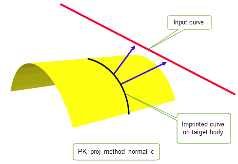
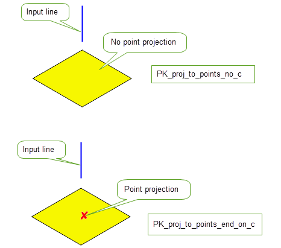
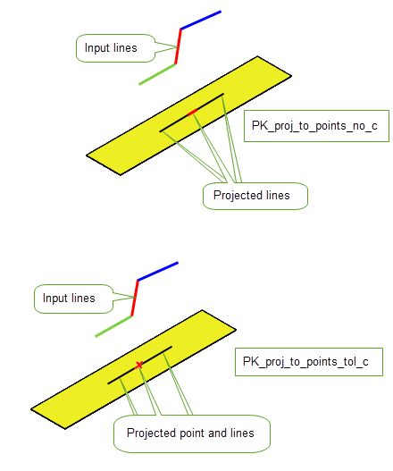
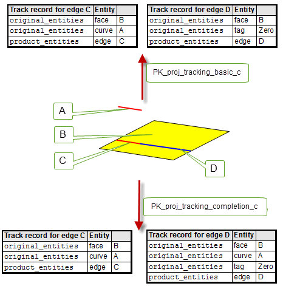
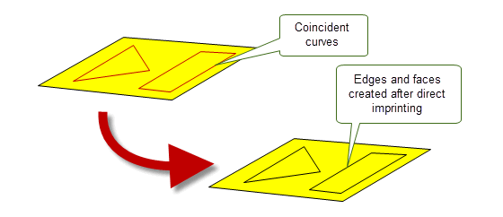
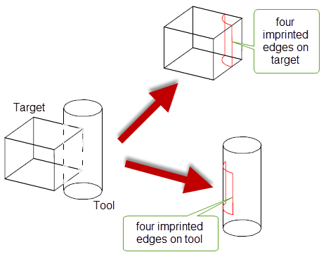
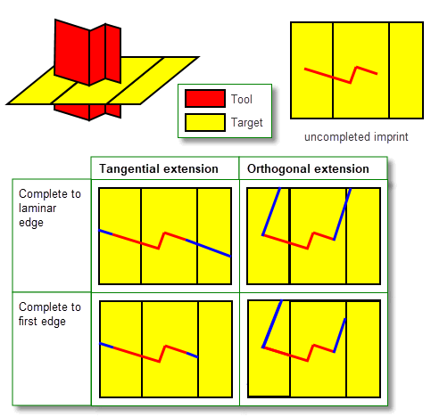
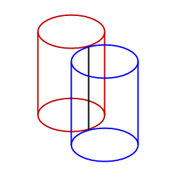
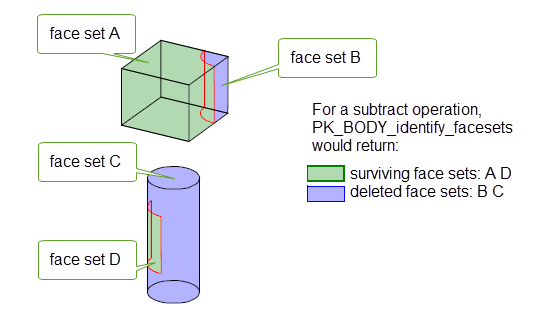
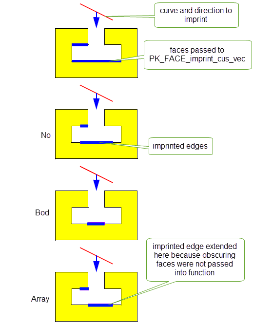

| |
Imprinting and Curve Projection |
| <<< Introduction To Imprinting and Booleans | Chapters | Introduction to Booleans >>> |
You can use Parasolid’s imprinting or projection functionality to imprint or project entities onto a body, sheet, surface or a set of faces. This chapter describes this functionality using:
You can use PK_CURVE_project for normal and vector projection or imprinting of a set of curves to a body, surface or a set of faces. A projection down the face normal is performed, unless a vector is supplied, in which case a projection in a vector direction is performed. The resultant projected curves and points are either orphan or construction geometry.
For examples of this functionality, see the code example in the
C++\Code Examples\Modelling\Projecting
Curves
and
Imprinting
folder, located in
example_applications
in your Parasolid installation folder.
PK_CURVE_project receives the following arguments:
|
An array describing the tool curves. It cannot contain self-intersecting curves or foreign geometry. |
|
|
A set of options to control the results of the curve projection or imprint. See Section 51.2.5, “Summary of options”, for an introduction to these options. |
PK_CURVE_project returns the following arguments:
|
Tracking information for the operation. See Section 51.2.16, “Tracking information”, for more information. |
If your application relies on reproducing behaviour when updating models built using earlier versions of Parasolid, you can use the
update
option to preserve old behaviour and help eliminate differences in rebuild results. This option lets you turn off some of the projecting enhancements that have been added at different Parasolid versions. Doing this ensures that curve projection gives the same results in the latest version of Parasolid as in earlier versions. See PK_proj_update_t in the
PK Interface Programming Reference Manual for more information on this
update
option.
|
Note: The default value is PK_proj_update_default_c which uses all appropriate projecting enhancements. Setting to a non-default value disables all appropriate projecting enhancements. |
You can choose to only project curves, only imprint curves or to project and imprint curves using the
function
option. This option takes the following values:
|
The input curves are projected onto the target producing new geometry. This new geometry can be returned as orphan geometry or associated with the body as construction geometry. The target topology and input curves are unaffected. This is the default value. |
|
|
The input curves are projected onto the target and then imprinted producing new edges and vertices. No orphan or construction geometry is produced and the input curves are unaffected. |
|
|
This combines the behaviour of PK_proj_function_project_c and PK_proj_function_imprint_c. Projected geometry is created, and a copy is made, thereby creating two identical sets of projected geometry. One set is imprinted, and attached to the edges and vertices created by the imprint. The other set is attached to the body as orphan or construction geometry. |
Different options are available depending on what value of the
function
option you choose. See Section 51.2.5, “Summary of options” for more information.
Figure 51-1 illustrates the results of choosing different values of the
function
option.
Figure 51-1 Choosing whether to project, imprint, or project and imprint input curves
You can set a number of options when either projecting curves, imprinting curves or doing both operations simultaneously using the PK_CURVE_project_o_t option structure. All options are available for all values of
function
unless otherwise stated. This contains the following:
|
Whether to perform projection only, imprint only, or both a projection and an imprint (Default: PK_proj_function_project_c). See Section 51.2.4, “Project or imprint curves”, for more information. |
|
|
Whether to perform a normal, vector, or perspective projection. See Section 51.2.6, “Choosing the projection method for the curve”, for more information. Default: PK_proj_method_unset_c |
|
|
The direction of the vector projection of the curve when |
|
|
If |
|
|
Whether the |
|
|
Whether to limit the curve projection to within |
|
|
The maximum distance of the curve projection from the input curve. The distance of a vector projection is measured along |
|
|
How to project to hidden faces. (Default: PK_proj_face_hidden_body_c). See Section 51.2.8, “Projecting to hidden faces”, for more information. |
|
|
How to connect disjoint components of the projection.This option can only be used for vector projections to faces or bodies (Default: PK_proj_connect_none_c). See Section 51.2.9, “Connecting disjoint components”, for more information. |
|
|
An array of output curve classes that are not to be produced by the operation.This array cannot contain both PK_CLASS_bcurve and PK_CLASS_spcurve. |
|
|
How to split the projected curves at clashes and intersections (Default: PK_proj_split_clash_all_c). See Section 51.2.10, “Splitting output curves”, for more information. |
|
|
How to project curves to points for point-like projections (Default: PK_proj_to_points_no_c). See Section 51.2.11, “Projecting curves to points”, for more information. Note: When clashing the end-points of point-like projections, Parasolid considers the tolerance as applying to both ends which can lead to vertex tolerances (or achieved tolerances) that are up to twice the input
tolerance
. |
|
|
Whether to add the projection as construction geometry. If the projection is to a surface or the option is set to PK_LOGICAL_false, orphan geometry is produced. This is in addition to nominal geomtery on tolerant edges controlled by the |
|
|
Controls the accuracy of resultant projected curves, where an accurate projection is not possible and conversion to a b-curve or SP-curve is necessary. Also used where conversion to a b-curve is requested ( |
|
|
Controls how the precision of the imprinted edges and vertices is applied (Default: PK_imprint_precision_auto_c). See Section 51.2.12, “Setting precision of imprints”. for more information. |
|
|
Whether to attach projected curves to tolerant imprinted edges as nominal geometry. This is in addition to any geometry controlled by the |
|
|
How to complete the imprinted edges (Default: PK_proj_complete_no_c). See Section 51.2.14, “Completing imprints”. for more information. |
|
|
Update switch to maintain consistency when rebuilding models built in older versions of Parasolid (Default: PK_proj_update_default_c). See Section 51.2.3, “Update control”, for more information. |
|
|
Controls the format of the tracking records (Default: PK_proj_tracking_basic_c). See Section 51.2.16, “Tracking information”, for more information. |
|
|
Whether to output results in the return structure or in the Parasolid Report. (Default: PK_results_output_return_c). See Section 51.2.17, “Reporting function results” for more information. |
|
|
Whether to return the originating intervals for each projection in the Parasolid Report. (Default: PK_LOGICAL_false). See Section 51.2.17, “Reporting function results” for more information. |
The
method
option allows you to choose whether to project a curve using a normal, vector, or perspective projection. All of these options are discussed in this section.
Note: We recommend that you do not leave the
method
option set to the default value. |
To produce a normal projection, where a curve is projected down the normal of a face, the
method
option must be set to PK_proj_method_normal_c.
Although normal projections are performed down the face normal, they are also implicitly bidirectional. Therefore, if the projection curves are within the normal field of the face but lie behind it, they will project onto the target. Normal projections are best used when projecting curves that are close to and related to the faces that they are being projected onto. When performing a normal projection, we recommend that you limit the maximum distance to avoid unexpected projections on distant faces. See Section 51.2.7, “Limiting the distance of the projection” for more information on maximum distance.

To produce a vector projection, where a given point on the curve is projected from the curve in the direction specified by
direction
, the
method
option must be set to PK_proj_method_vector_c.
For vector projections,
bidirectional
allows you to project curves in the positive and negative
direction
.
Figure 51-3 shows an upward vector projection of a curve onto a body.
Figure 51-3 Curve projection using the
bidirectional
option.
To produce a perspective projection, where a curve is projected along a ray away from a given eye point onto a target, the
method
option must be set to PK_proj_method_perspective_c. The origin of the projection is specified by
eye_position
. This is illustrated in
Figure 51-4.
Figure 51-4 Perspective projection
You can limit the distance of the projection from the input curve using the
use_max_dist
and
max_dist
options. The
use_max_dist
option takes the following values:
If
use_max_dist
is set to a non-default value, the value of
max_dist
must be greater than zero.
|
Note: This option does not support vector projections to surfaces. |
You can control how to project to hidden faces using the
hidden
option. This option takes the following values:
Figure 51-5 shows three cases of a downward vector projection of a curve onto a body.
Figure 51-5 Vector projection of a curve using
hidden
option
You can control the connection of disjoint components of a curve projection using the
connect
option. With this option, resultant curves that would otherwise have been disjointed can be connected. This option takes the following values:
|
Connect, if possible, with projections on faces that are side on when viewed in the direction of the projection. |
|
|
Project to all faces that are side on when viewed in the direction of the projection, even if they do not connect disjoint components of the projection. |
|
|
Project to all faces that are side on or hidden when viewed from the direction of the projection, regardless of whether they connect disjoint components of the projection. Note: This value is not supported if
use_max_dist
is set to PK_proj_max_dist_whole_c. |
Note: If
use_max_dist
is set to PK_proj_max_dist_whole_c, all connect projections must lie entirely within the
max_dist
of the input curve. |
Figure 51-6 illustrates this option.
Figure 51-6 Curve projection using the
connect
option
|
Note: This option can only be used for vector projection of curves to faces or bodies. |
Projected curves are split at G1 discontinuities.You can control how they are further split at clashes and self-intersections with the
split_clash
option. This option takes the following values:
Figure 51-7 shows a B-curve and a line as the two input curves being projected onto a body. These input curves clash and the resultant projection shows this clash.
split_clash
to PK_proj_split_clash_no_c, the projected curves are not split.
split_clash
to PK_proj_split_clash_self_c, the projected B-curve is split at the point of self-intersection.
split_clash
to PK_proj_split_clash_all_c, the projected B-curve is split at the point of self-intersection and the projected line curve and B-curve are both split where they clash with each other.
Figure 51-7 Curve projection using the
split_clash
option
If no split occurs, a record of type PK_REPORT_record_3_t will be written to a Parasolid Report with the following status:
See Chapter 11, “Using Reports” for more information about the Parasolid Report mechanism.
You can control the projection of lines and linear B-curves to point-like projections using the
create_points
option. This option takes the following values:
|
Do not create point projections, unless it is necessary for the validity of the model. This is the default. |
|
|
Create point projections and vertex imprints if the input line is a straight line that lies in the direction of the projection, or if it is necessary for the validity of the model. |
|
|
Create point projections and vertex imprints in all cases listed for PK_proj_to_points_end_on_c,and additionally for all projected curves that are tolerantly point-like, with respect to operation and local topological tolerances. |
|
|
This value is deprecated and should not be used in new code. Use PK_proj_to_points_end_on_c instead. |
Figure 51-8 illustrates a point-like projection from a line that is vertically projected down onto a body. By setting the option to PK_proj_to_points_no_c, no point-like projections are created. By setting PK_proj_to_points_end_on_c, a point-like projection is created where the input line intersects the target face.
Figure 51-8 Projecting a vertical line down onto a face to create a point-like projection
Figure 51-9 shows three input lines that are projected down onto an input body. With the option set to PK_proj_to_points_no_c, three edges are projected onto the body, one from each input line. With PK_proj_to_points_tol_c, two edges and a point (tolerant vertex) are projected. This is because the projection of the red line is shorter than two times the tolerance passed into PK_CURVE_project and is therefore projected as a point.
Figure 51-9 Creating point and line projections from three lines
You can control how precision is applied to imprinted edges and vertices using the
imprint_precision
option. This option takes the following values:
|
Note: This option controls the precision of imprinted topology only. It does not affect the accuracy of projected geometry. |
You can choose whether to attach the projected curves as nominal geometry using the
nominal
option. This option takes the following values:
You can choose whether to complete an imprint such that the end vertices of the imprint lie on an edge of the body or face using the
complete
option. This option takes the following values:
|
Complete the imprint and stop at the first edge encountered. |
|
|
Complete the imprint and stop at the first laminar or boundary edge. |
Figure 51-10 shows the effect of using the
complete
option for PK_CURVE_project. For PK_proj_complete_edge_c, the edge is extended to the first edge encountered in each direction; for PK_proj_complete_faceset_c, the edge is extended to the first laminar or boundary edge in each direction.
Figure 51-10 Effect of the
complete
option for PK_CURVE_project
See Section 51.2.15, “Limiting the distance of imprint completion” for information on how to limit the distance of the imprint completion.
As described in Section 51.2.14, “Completing imprints”, you can use the
complete
option to control whether imprint completion can be extended up to an edge, or to the boundary of a supplied faceset. You can also optionally choose to limit the distance of an imprint completion using the
complete_bound
and
complete_bound_distance
options. With these options, an imprint will not be extended if the completion distance is greater than the supplied bound distance.
The
complete_bound
option takes the following values:
|
The imprint will be extended only if the completion edge lies within the supplied |
The
complete_bound_distance
option is the distance used to bound the imprint completion. If
complete_bound
is set to a non-default value,
complete_bound_distance
must be greater than
tolerance
.
Note: The
complete_bound
option can only be set to a non-default value if the
complete
option is also set to a non-default value. |
Figure 51-11 illustrates the result of using these options when
complete
is set to PK_proj_complete_edge_c. In (a) the completion edge is not within the bound limits and therefore the imprint will not be extended. In (b) the completion edge is within the bound limit set by
complete_bound_distance
and therefore the imprint will be extended.
Figure 51-11 Limiting the extension of the imprint using
complete_bound
and
complete_bound_distance
options
You can track edges produced by imprint completion from projected curves using the
tracking
option. This option takes the following values:
Note: Only those edges that are imprinted as a result of the operation are returned by the
tracking
option. Existing edges or faces that are split as a result of the operation, are not returned. |
Figure 51-12 illustrates the tracking information that is returned when a curve A is projected onto a face B creating two new edges, C and D. Two track records are returned, one for each edge created by the imprint:
Figure 51-12 Tracking information returned when projecting curves
You can use the
results_output
option to choose whether to output the results of the operation in the return and tracking arguments of PK_CURVE_project, or in the Parasolid Report. This option has the following values:
|
The results of the operation are output in the return and tracking arguments. Default. |
|
|
The results are output in the Parasolid Report via a record of type PK_REPORT_record_type_3_t with Note: If you choose to return information via the Parasolid Report, the tracking and return arguments will be empty. See Chapter 11, “Using Reports” for more information on the Parasolid Report mechanism. |
If you choose to output the results to the Parasolid Report, you can optionally choose to return the originating intervals for each projection in the report using the
want_orig_intervals
option. When set to PK_LOGICAL_true, the parameter intervals on the input curves that produced the projection or imprint are returned. This is illustrated in
Figure 51-13.
Note: Intervals will only be defined for direct imprints and they can only be returned when
results_output
is set to PK_results_output_report_c. |
Figure 51-13 Returning the originating parameter interval of the input curve
Parasolid also provides imprinting functionality in the form of direct imprinting. Unlike the more general imprinting functionality provided by PK_CURVE_project (see Section 51.2), direct imprinting requires that the set of curves to be imprinted are coincident with the surface of the face onto which they are imprinted. Direct imprinting is a convenient way, for example, to create a set of profiles by imprinting sets of planar curves on planar sheets.
Figure 51-14 Creating profiles on a face using direct imprinting
You can perform direct imprinting using PK_FACE_imprint_curves_2. This function receives a face and a set of curves and intervals, and creates new edges and faces.
Parasolid provides several imprinting tools that you can use for your own purposes. These tools can be used to implement your own manual boolean functionality, should you want to include unique features in your application that could not be done conveniently using the standard Parasolid boolean functionality. For example, using these tools you could add features such as a higher degree of user interaction, or some kind of preview functionality.
Two boolean tools are provided:
To implement your own manual boolean functionality, you could imprint edges on a target and tool, identify the distinct face sets on the target and tool, and then use PK_FACE_delete_2 to remove the ones you don’t want. Finally, you could use PK_BODY_apply_knit_pattern to fuse the remaining face sets into a single body.
Boolean tools could also be used for a range of other operations. For example, you could use them in conjunction with other Parasolid tools to remove unwanted areas of overlapping sheet bodies before sewing them.
|
Note: This functionality offers partial support for facet geometry. |
The initial stage of a boolean operation is to intersect the target and tool entities and imprint edges and vertices on them where they intersect. These imprinted edges and vertices form the boundaries of intersection between target and tool entities.
You can create sets of imprinted edges and vertices on a target and tool entity using PK_BODY_imprint_body, PK_BODY_imprint_faces_2, and PK_FACE_imprint_faces_2. These functions create imprinted edges and vertices on the supplied entities and return these edges and vertices as paired sets.
Figure 51-15 Imprinting a cylindrical tool on a target cube resulting in four pairs of imprinted edges
These functions receive option structures to control the imprinting process. These contain the following options:
imprint_tool |
Whether to imprint edges and vertices on the tool as well as the target. Default: PK_LOGICAL_true. |
imprint_overlapping |
For sheet bodies, whether to imprint the boundaries of overlapping areas of faces that share the same surface. See Section 52.4.7, “Imprinting the boundaries of overlapping areas”, for more information. Default: PK_LOGICAL_false. |
extend_face_list |
Whether to add neighboring faces from either the target or the tool to the list of imprint faces, in order to prevent open loops of edges. See Section 51.4.1.2, “Adding extra faces to face-imprints”, for more information. Default: PK_imprint_face_list_no_c. |
matched_region |
Structure that supplies the function with matched topology, using the same format as the boolean option structure. See Section 52.4.5, “Matched topology in local and global boolean operations”. |
imprint_complete_targ imprint_complete_tool |
Controls whether to complete the imprint such that end vertices of an imprinted edge may be extended until they meet an edge of the body or face. See Section 51.4.1.1, “Completing imprints” for more information. Default: PK_imprint_complete_no_c. |
imprint_extend_targ imprint_extend_tool |
The orientation in which to complete the imprint on the target or tool, respectively. See Section 51.4.1.1, “Completing imprints” for more information. Default: PK_imprint_extend_tangent_c |
update |
This option lets you maintain consistency when rebuilding models built in older versions of Parasolid. See Section 53.4, “Specialised boolean operations” for more information. Note: For the imprinting functions PK_BODY_imprint_body, PK_BODY_imprint_faces_2 and PK_FACE_imprint_faces_2, the update values PK_boolean_update_5_c and older give the same behaviour. |
have_tolerance tolerance |
If
The |
In addition, PK_BODY_imprint_faces_2 and PK_FACE_imprint_faces_2 contain the following option:
imprint_dir |
Whether imprinted edges should have consistent direction. See Section 51.4.1.3, “Ensuring imprinted edges have consistent direction”, for more information. |
You can complete an imprint on the target or tool - that is, extend the imprinted edge to another nearby edge on the body so as to create a closed loop of edges - from any vertex of an imprinted edge that has been created by an intersection with a laminar edge on the other body. Four options in PK_BODY_imprint_o_t, PK_BODY_imprint_faces_o_t, and PK_FACE_imprint_faces_o_t are used to control how this behaviour can be used.
|
the
Both these options can be set to any of the following:
This value is most useful when used in combination with the
Specified tools must come from sheet bodies. Specified targets can come from sheet or solid bodies, unless |
|
|
control the direction in which imprinted edges are completed |
the
You can choose to extend along a plane that either lies tangential to or orthogonal to the imprinted edge. |
The effect of these options is illustrated in Figure 51-16.
Figure 51-16 Completing imprinted edges on target bodies
The corresponding imprinted (or original) edges and vertices are returned in matching arrays contained within the results structure. In the case of PK_FACE_imprint_faces_2, where an entity has been created because of imprint completion, the matched element in the other list will be PK_ENTITY_null.
When using PK_FACE_imprint_faces_2, PK_BODY_imprint_faces_2, PK_FACE_boolean_2, or PK_FACE_instance_tools, you may also be able to prevent open loops of edges by adding neighboring faces from either the target or tool (or both) into the imprint. This is done using the following option:
extend_face_list |
If the imprint operation results in incomplete loops of edges, include any neighboring faces and imprint them accordingly. Continue adding neighboring faces until either the loops are closed, or there are no more faces in the body to include. You can choose between the following:
The default behaviour is not to add neighboring faces (PK_imprint_face_list_no_c). |
Careful use of this option allows an effect similar to blend propagation. For example, you can pass a single tool face, and request that the tool faces are extended, and Parasolid creates a complete closed imprint on the target automatically.
The behaviour of
extend_face_list
is explained in
Figure 51-17, which shows how an imprint on a target and tool may be extended. All four values for extend_face_list are illustrated.
Figure 51-17 Extending the list of faces in a face imprint on the target and the tool
The extend_face_list options take effect before any
imprint_complete
options (see Section 51.5.6, “Imprint completion”) that have been specified.
If, when using
extend_face_list
, you want to ensure that the results of imprint completion during a local boolean operation are limited to the target or tool faces specified in the function call, you should set
imprint_complete_targ
or
imprint_complete_tool
(as appropriate) to PK_imprint_complete_faceset_c. If you do not do this,
extend_face_list
adds neighboring faces up to the laminar edges of the body, as shown in
Figure 51-18.
Figure 51-18 Combining
imprint_complete_targ
and
extend_face_list
options
Note: Parasolid also provides imprinting functionality for:
|
You can use the
imprint_dir
option in PK_BODY_imprint_faces_o_t and PK_FACE_imprint_faces_o_t to control whether the directions of any imprinted edges are consistent with the original topology that created them. This option takes the following values:
|
Do not perform any checks on imprinted edge direction. This is the default. |
|
|
Inspect imprinted edges and, where necessary, reverse the direction of any edges whose direction is inconsistent. Report any imprinted edges for which a direction cannot be determined using a report status of PK_REPORT_1_imp_dir_undef_c. See Chapter 11, “Using Reports”, for information on using the Parasolid report mechanism. |
When identifying whether the edge direction is consistent, it is compared to various test directions derived from the edge's originating topology:
A consistent direction for an imprinted edge is produced by applying the following tests:
Figure 51-19 Imprinted edges arising from original edges
Figure 51-20 Imprinted edges due to touching cylinders
Once edges and vertices has been imprinted on a target and tool body, you need to identify which face sets (on both the target and tool) would survive a boolean operation.
PK_BODY_identify_facesets receives loops of coincident edges, points of contact and a boolean operation (unite, subtract and intersect) and then calculates which face sets would survive the operation and which face sets would be deleted. The loops of coincident edges and points of contact would typically be obtained via calls to the imprinting functions described in Section 51.4.1: PK_BODY_imprint_body and PK_FACE_imprint_faces_2.
Figure 51-21 Simulating a subtract operation based on imprinted edges from Figure 46-11.
You can use Parasolid’s imprinting functionality to imprint curves, faces, or planes onto a sheet body.
In each of the methods described, edges created by the imprint operation are returned, including those existing edges along which the intersection occurred.
To solve any precision problems, a tolerance is supplied; this value may also be used in the creation of SP-curves on the imprinted edges.
|
Note: The behaviour of the imprint operations as described here applies specifically to their use with sheet bodies. In general, these imprinting functions can also be used with other body types. |
|
You can imprint curves on to a body using two different methods, by projecting them as follows:
Edges and vertices are added to the body which are the image of the curves under either projection method. |
|
|
You can imprint a face on to a body using PK_BODY_imprint_faces_2. This adds edges and vertices to the body where the faces intersect with the body (except where they already exist). See Section 51.4.1, “Imprinting”, for more information. |
|
|
You can imprint a plane on to a body using PK_BODY_imprint_plane_2. This adds edges and vertices to the body where the plane intersects with the body (except where they already exist). You can also demand that the imprinted edges have consistent direction. See Section 51.4.1, “Imprinting”, for more information. |
|
Note: These functions are used to maintain old behaviour for the purpose of version updates. However, you are encouraged to use PK_CURVE_project in any new code. |
PK_BODY_imprint_cus_vec and PK_FACE_imprint_cus_vec support a
connect
option that you can use to connect together disjoint components that are created during a single call to those functions. This option lets you control the extent to which imprinted curves are connected together, giving you control over the creation of imprints on both side faces and back-facing faces. It takes the following values, which are illustrated in
Figure 51-22:
Figure 51-22 Connecting disjoint components of an imprint
|
Note: This behaviour applies when imprinting curves on to either solid or sheet bodies. |
When creating vector imprints, you often want to imprint in both directions along the specified vector. Using the default options, you can only do this with two function calls, which as well as being a performance overhead may also introduce unwanted vertices into the imprint that you then have to remove.
PK_BODY_imprint_cus_vec and PK_FACE_imprint_cus_vec support a
bidirectional
option that let you imprint in both directions using a single function call. This improves performance, and also automatically removes any mergeable vertices that are created as a result of the imprint.
Figure 51-23 shows a simple example in which a curve is imprinted onto a sheet. Because the curve intersects the sheet, imprints in both directions need to be created in order to imprint the entire extent of the curve onto the sheet.
Figure 51-23 shows the difference in the results obtained by making two function calls compared to using the
bidirectional
option.
Figure 51-23 Imprinting in both directions at once
When imprinting curves on faces using the local function PK_FACE_imprint_cus_vec, Parasolid provides additional control over the imprint operation with the
hidden
option. This option lets you control the effect of other faces that obscure the faces being imprinted. The
hidden
option can take any of the following values:
|
Imprint curves on the faces supplied to PK_FACE_imprint_cus_vec regardless of any other faces that may obscure the imprint. |
|
|
Imprint curves on the faces supplied, taking into account any other faces from the parent body of the supplied faces that obscure the imprint. This value produces a result similar to PK_BODY_imprint_cus_vec, but restricted to only the supplied faces. It is the default. |
|
|
Imprint curves on the faces supplied, taking into account any faces supplied to the parent function, but no others. |
The effect of these values is shown in Figure 51-24, which shows the effect, in cross-section, of imprinting a subset of the faces of a body.
Figure 51-24 Allowing for faces that obscure the imprint
Note: If the
bidirectional
option is used as well as
hidden
, then the effect of the value for
hidden
is treated independently for each imprint direction: some faces may obscure the imprint in one direction but not the other. See Section 51.5.2, “Imprinting in both directions at once”, for more details about
bidirectional
. |
Sometimes, when projecting curves onto a face along a vector using PK_FACE_imprint_cus_vec or PK_BODY_imprint_cus_vec, one or more curves will appear to intersect when viewed along the projection vector. This can be problematic: to produce a valid body, additional vertices need to be imprinted at the points where the intersections occur. If you do not wish these vertices to be imprinted, there is no way for the imprint operation to complete successfully. Parasolid lets you control the behaviour in such circumstances using the
process_intersections
option, which can take the following values:
|
If the supplied curves appear to intersect when viewed along the projection vector, the curves at the points of intersection are broken up, and additional vertices imprinted so as to produce a valid body. |
|
|
If the supplied curves appears to intersect when viewed along the projection vector, the function call fails with PK_ERROR_cant_do_imprint. |
|
|
This value is reserved for updating models built using Parasolid V22.1 or earlier (PK_FACE_imprint_cus_vec) or Parasolid V24.1 and earlier (PK_BODY_imprint_cus_vec), and preserves old behaviour. When working with models created in newer versions of Parasolid, you should not use this value. This is the default. |
Figure 51-25 shows a simple example in which a single helical curve is imprinted onto a face. Because the helical curve appears to intersect itself when viewed in the direction of the project vector, a successful imprint is only possible if
process_intersections
is set to PK_imprint_intersect_fix_c.
Figure 51-25 Imprinting a helical curve onto a face
Figure 51-26 shows an example in which two curves that only appear to intersect when viewed along the projection vector can be successfully imprinted onto a body by setting
process_intersections
to PK_imprint_intersect_fix_c.
Figure 51-26 Imprinting several curves that only intersect along the projection vector
You can control which faces in a body receive imprints when imprinting down the face normal of the body using either PK_BODY_imprint_cus_normal or PK_FACE_imprint_cus_normal.
One way to do this is simply to pass in a specific subset of faces in a body to PK_FACE_imprint_cus_normal. However, in some circumstances this might not be possible or desirable. In such cases, you can restrict imprinting so that only faces that are within a specified distance of the imprinting curves receive imprints, using the following options:
use_max_projection_dist |
Whether to restrict imprints to faces that are within a specified distance of the curves. This can take the following values:
|
max_projection_dist |
A projection distance for the imprint operation. If |
Figure 51-27 illustrates a simple case where a curve is imprinted onto a block. By default, edges are imprinted on both the front and back faces of the block (A). By specifying a
max_projection_dist
, you can restrict the imprint so that only the nearest face is imprinted (B).
However, for an edge to be imprinted,
max_projection_dist
must be large enough such that the part of the curve that is imprinted is close enough to the nearest face:
Figure 51-27 Restricting imprints to nearby faces
The functions PK_BODY_imprint_cus_normal, PK_FACE_imprint_cus_normal, PK_BODY_imprint_cus_vec and PK_FACE_imprint_cus_vec allow you to specify whether an edge imprinted on a body should be extended to meet an existing edge. This is done with the
imprint_complete
option, which takes the following values:
|
Do not extend the edge once it has been imprinted. This is the default. |
|
|
Extend the imprinted edge to the nearest existing laminar edge. |
Figure 51-28 and
Figure 51-29 show the effect of the
imprint_complete
option for PK_BODY_imprint_cus_vec and PK_FACE_imprint_cus_vec, respectively. For PK_imprint_complete_edge_c, the edge is extended to the nearest existing edge in each direction; for PK_imprint_complete_laminar_c, the edge is extended to the nearest laminar edge in each direction. In all cases, the extension is tangential to the imprinted edge (i.e. in the direction of the imprinted edge). The difference in the two functions is only evident for PK_imprint_complete_laminar_c, where those edges that are considered laminar edges by PK_FACE_imprint_cus_vec are not laminar edges for PK_BODY_imprint_cus_vec.
Figure 51-28 Effect of the
imprint_complete
option for PK_BODY_imprint_cus_vec and PK_BODY_imprint_cus_normal
Figure 51-29 Effect of the
imprint_complete
option for PK_FACE_imprint_cus_vec and PK_FACE_imprint_cus_normal
|
Note: The value PK_imprint_complete_faceset_c should only be used when completing imprints created by local booleans, as described in Section 52.4.13, “Imprint completion”. If you use this value with one of the local imprinting functions described here, it has the same effect as PK_imprint_complete_laminar_c. |
By default, the positions on a body of edges and vertices that are imprinted from curves along a vector are calculated by projecting the curves along that vector.
Sometimes, for example if curves are close to or coincident with the model, this can introduce unnecessary tolerance information into the model. To avoid this, you can use the following options to ensure that the edges and vertices imprinted on a model are exact.
These options are available to both PK_FACE_imprint_cus_vec and PK_BODY_imprint_cus_vec:
Note: The
imprint_coi_exactly
option is also available in PK_BODY_imprint_cus_normal and PK_FACE_imprint_cus_normal. You should ensure that the curves to be imprinted are close to the body when using the option from these functions. The
imprint_exactly
option is not available in either PK_BODY_imprint_cus_normal or PK_FACE_imprint_cus_normal. |
You can specify the continuity of projection curves that are imprinted using either of the normal imprinting functions PK_BODY_imprint_cus_normal and PK_FACE_imprint_cus_normal. You do this using the
preferred_continuity
option, which can take the following values:
|
Any projected curves are G1 continuous, unless they have been imprinted exactly. This is the default. |
|
|
Any projected curves are C2 continuous, unless they have been imprinted exactly (in which case they have the continuity of the original curve). You should also set |
Note: The
preferred_continuity
option takes a value of type PK_continuity_t. This datatype contains a number of additional values that are not listed here, and should not be used in the context of this option. |
All four of the curve imprinting functions - PK_BODY_imprint_cus_normal, PK_FACE_imprint_cus_normal, PK_BODY_imprint_cus_vec, and PK_FACE_imprint_cus_vec - can return detailed tracking information that relates the curves used for the imprinting function to both the edges imprinted and the topology on which those edges were imprinted.
Figure 51-30 shows the tracking information returned in the
track_records
sub-structure when imprinting two curves onto the sheet body shown. One curve creates an imprinted edge on a face in the body, and the other curve creates an imprinted edge on an existing edge. Two track records are returned, as follows:
Figure 51-30 Tracking the results of imprint operations
If you use the
imprint_complete
option (as described in Section 51.5.6, “Imprint completion”), then any edges that are created as a result of the completion are also returned in
product_topols
. The corresponding
original_topols
contains the topology on which the completion has been imprinted, but it does not contain a corresponding originating curve, since no such curve exists.
Figure 51-31 illustrates the tracking information that is returned when a curve A is imprinted onto a face B and imprint completion is turned on, creating two new edges, C and D. Two track records are returned, one for each edge created by the imprint:
Figure 51-31 Tracking information returned when using imprint completion
This tracking information is available by default in PK_BODY_imprint_cus_vec and PK_FACE_imprint_cus_vec. In PK_BODY_imprint_cus_normal and PK_FACE_imprint_cus_normal, it needs to be enabled using the following option:
tracking_type |
Choose the amount of tracking information returned by the imprint operation. This can take the following values:
|
PK_EDGE_imprint_point adds a vertex to an edge at specified coordinates, providing that a vertex does not already exist at that position. The added vertex splits all edges, except for a ring edge, into two.
PK_FACE_imprint_point adds a vertex to a face on a sheet, solid or general body. The new vertex is an isolated vertex, and a new loop is created to contain it.
PK_REGION_imprint_point adds a vertex to a region of a general body. The new vertex is an acorn vertex in the region, and a corresponding acorn shell is created to contain it.
| <<< Introduction To Imprinting and Booleans | Chapters | Introduction to Booleans >>> |